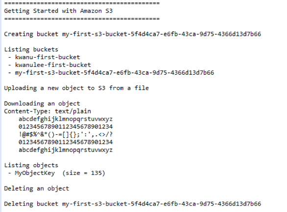

스토리지가 많이 필요한 경우
자신의 고유한 스토리지를 구성하고 관리하는 것은 비싸고 시간이 많이 걸림
Amazon S3
Amazon S3는 데이터를 버킷 내에 객체로 저장
주요 기능
백업 및 스토리지
애플리케이션 호스팅
미디어 호스팅
소프트웨어 제공
콘솔을 사용하면 코드를 생성하지 않고도 Amazon S3 작업 수행 가능
주요 항목
Java용 AWS SDK를 사용하여 AWS를 빠르게 시작합니다. SDK를 사용하면 Amazon S3, Amazon EC2, DynamoDB 등을 포함하는 여러 AWS 서비스를 위한 Java API가 제공되므로 복잡하게 코드를 작성하지 않아도 됩니다.
AWS Toolkit for Eclipse
Work with라는 레이블이 붙은 텍스트 상자에 https://aws.amazon.com/eclipse 를 입력하고 Enter를 칩니다.
다음과 같은 형식의 credentials 파일을 다음 위치에 저장
윈도우: C:\Users\USERNAME\.aws\credentials (USERNAME은 자신 컴퓨터의 사용자 이름으로 대치)
credentials 파일은 다음 형식의 내용을 저장
[default]
aws_access_key_id = your_access_key_id
aws_secret_access_key = your_secret_access_key생성된 프로젝트 실행
